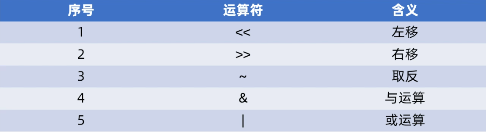

C语言的位移运算符
常用的有如下
一、逻辑移位
在嵌入式开发中，我们只涉及逻辑移位：不关心符号位，都是补0
算术移位，需要分有符号型值和无符号型值：
对于无符号型值，算术移位等同于逻辑移位。
对于有符号型值 ，算术左移等同于逻辑左移；算术右移补的是符号位，正数补0，负数补1。
1.1 逻辑左移
高位丢弃、低位补零。每次左移相等与乘以2
int a = 0x123; int b = a<<2; // b=0x48C

1.2 逻辑右移
高位补零，低位丢弃。每次左移相等与除以2
int a = 0x123; int b = a>>2; // b=0x48

二、取反
unsigned int a = 0x123;
unsigned int b = ~a; // b的每一位，都是a对应位的取反
unsigned int a = 0x123;
unsigned int b = 0x456;
unsigned int c = a | b; // c等于a位或b，即：a,b的每一位进行或操作
三、位与
只有对应的两个二进位都为1时，结果位才为1
unsigned int a = 0x123;
unsigned int b = 0x456;
unsigned int c = a & b; // c等于a位与b，即：a,b的每一位进行与操作
两位相与，结果
1 & 1 = 1
1 & 0 = 0
0 & 1 = 0
0 & 0 = 0

四、位或
只要对应的二个二进位有一个为1时，结果位就为1
int a = 0x6; //二进制是0b0110
int b = 0x7; //二进制是0b0111
int c = a|b;
两位相或，结果如下
1 | 1 = 1
1 | 0 = 1
0 | 1 = 1
0 | 0 = 0
所以，上述C语言代码的结果如下图所示：

五、置位
（使用位或的有0为0规则，且全1为1，说明1无影响）
int a = 0x6; //二进制是0b0110
int a |= (1<<3);
第3行，将变量a的bit3置1。1<<3 = 0b1000，然后0b1000|0b0110=0b1110，即a=0xe
六、清位
int a = 0x6; //二进制是0b0110
int a &= ~(1<<2);
第3行，将变量a的bit2清位。~(1<<2) = 0b1011，然后0b1011&0b0110=0b0010，即a=0x2
七、把某几位设置为某值
比如要把bit7设置为1，把bit8清除为0，这可以分两步操作：先设置bit7，再清除bit8。
还有一种情况：bit[8:7]= val, 不知道val的取值是多少，怎么办？
先清除bit8、bit7，再或上val，代码如下：
unsigned int a = 0x123;
unsigned int b = a & ~(3<<7); /* 清除bit7, bit8 */获取
b = b | (val << 7); /* 设置bit7, bit8为val */
八、获取某一位的状态

操作如下：
/* 测位实验 */
if (*pGpiobOdr & (1<<7))
a = 1;
else
a = 0;